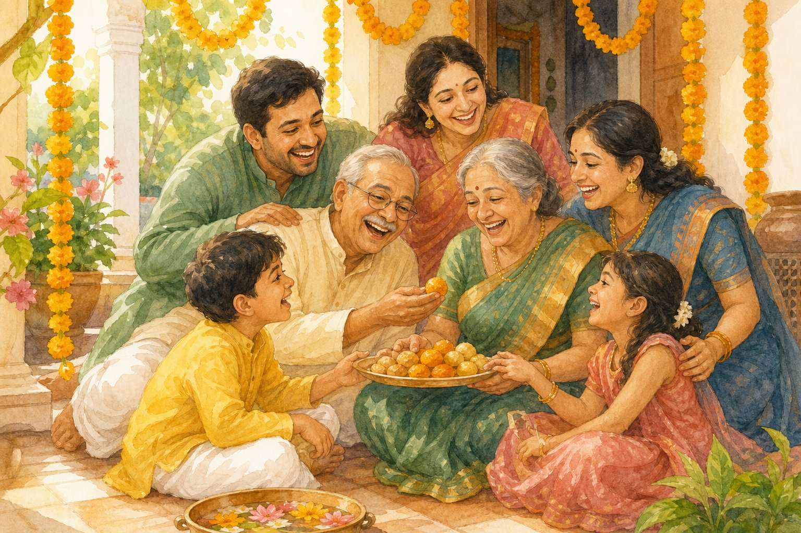

EkGuru › Learn Hindi › Hindi › Beginner › Vocabulary › Hindi Family Words — Why There Are Twelve Words for Cousin
Hindi Family Words — Why There Are Twelve Words for Cousin
🔊 Tap any speaker button to hear Hindi spoken. Too fast or slow? Use the speed button at the bottom-right of the page.

माँ पापा भाईEnglish has one word for uncle. Hindi has at least four, and which one you use tells everyone listening exactly how that person is related to you. This is the part of Hindi that most surprises learners from English-speaking families, and it is genuinely useful once it clicks.
The immediate family
| English | Hindi | Say it |
|---|---|---|
| Mother | माँ / माता | maa / maata |
| Father | पिता / पापा | pita / papa |
| Elder brother | बड़ा भाई / भैया | bada bhai / bhaiya |
| Younger brother | छोटा भाई | chhota bhai |
| Elder sister | बड़ी बहन / दीदी | badi bahan / didi |
| Younger sister | छोटी बहन | chhoti bahan |
| Son | बेटा | beta |
| Daughter | बेटी | beti |
| Husband | पति | pati |
| Wife | पत्नी | patni |
Notice that even brother and sister split by age. You rarely say just "brother" — you say elder or younger, because in an Indian family the distinction matters socially, not just factually.
Tap to flip — the immediate family:
The four uncles
| Which uncle | Hindi | His wife |
|---|---|---|
| Father's elder brother | ताऊ taau | ताई taai |
| Father's younger brother | चाचा chacha | चाची chachi |
| Mother's brother | मामा mama | मामी mami |
| Father's sister's husband | फूफा foofa | बुआ bua |
| Mother's sister's husband | मौसा mausa | मौसी mausi |
Tap to flip — the uncles (and their wives on the back):
The grandparents split too
Father's side: दादा dada (grandfather),
दादी dadi (grandmother)
Mother's side: नाना nana (grandfather),
नानी nani (grandmother)
So "I am going to my nani's house" tells a Hindi speaker immediately that you mean your mother's mother, with no further explanation.
Why the language does this
It is not decoration. In a traditional joint family the relationship determined who you lived with, who could correct you, whose household you married into, and how property passed. A language spoken in that system needed precise words, and it kept them.
The practical consequence today: if you call everyone "uncle", you are understood but you sound like a foreigner. Getting chacha versus mama right marks you instantly as someone who knows the family.
The in-laws, which get harder
ससुर sasur father-in-law · सास saas mother-in-law · जेठ jeth husband's elder brother · देवर devar husband's younger brother · ननद nanad husband's sister · साला saala wife's brother · भाभी bhabhi brother's wife
A warning worth having: साला is also a common mild insult when used to a stranger. Use it only for your actual brother-in-law.
And the cousins
Hindi has no word for "cousin". You use the same word as for a sibling, with the relationship attached: your chacha's son is your chachera bhai — literally "chacha-ish brother". Your mama's daughter is your mamere bahan.
Culturally this matters: cousins are described as brothers and sisters, and in most families they are treated that way.
The words you will use most
Outside the family, भैया and दीदी are how you address a shopkeeper, a driver, a waiter — anyone roughly your age. Older strangers get अंकल and आंटी, borrowed straight from English and used constantly.
Using them makes you sound warm rather than distant, which is exactly the effect you want. There is more of this in our guide to greetings.
Quick check
What is your father's younger brother called?
चाचा (chaacha) — चाचा (chaacha) is father's younger brother; ताऊ (taau) is father's older brother.
What is your mother's brother called?
मामा (maama) — मामा (maama) is mother's brother.
Why is family vocabulary harder in Hindi than English?
Hindi splits relations English lumps together — Hindi splits relations English lumps together — like the two kinds of uncle — which is why there are more words to learn.
Keep going
Hindi questions, answered directly Short answers to common Hindi questions Write your name in Hindi Practise with a native-speaking tutorPractise this with a real teacher
Reading about pronunciation only takes you so far — the sounds English does not have need someone listening and correcting you. EkGuru tutors teach one to one, from $6 a lesson, and most offer a trial.
See the tutors More free guides
Lessons run at times that suit you wherever you are — see the hours for your location.